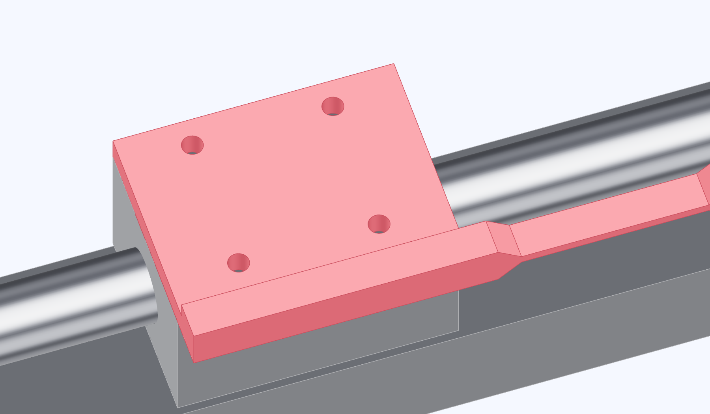

Bolt the rod to the carriage
Set the push rod's pad on top of the carriage. The bar runs beside the carriage and the roller leg points down at the tube end.

- With the stage unpowered, turn the coupling by hand until the carriage is near the middle.
- Try an M4 screw by hand in a bare carriage hole. Compare its available thread depth with the screw's projection through the pad and washer. Add washers or use a shorter screw if it would bottom.
- Set the pad flat on the carriage and fasten it through all four holes with the M4 screws and washers.
Check the carriage
The pad sits flat and the screws clamp it before they bottom out. The roller returns when you release the rod.